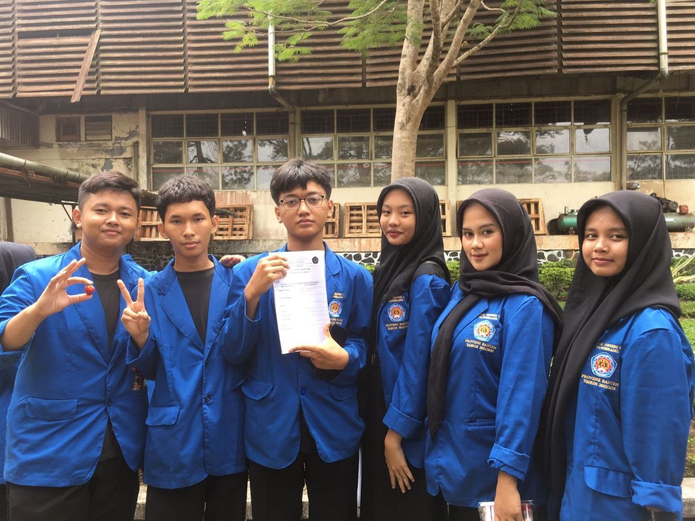
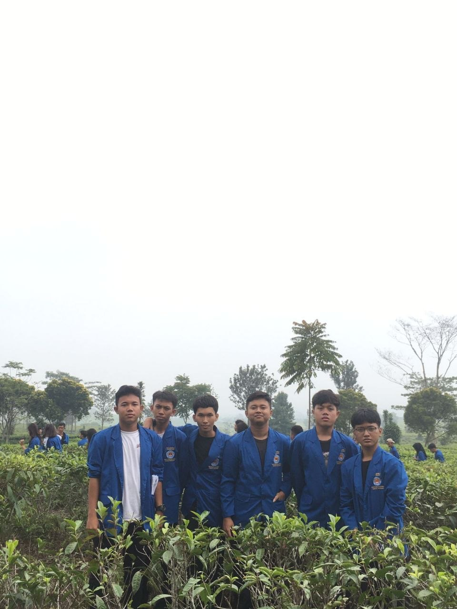
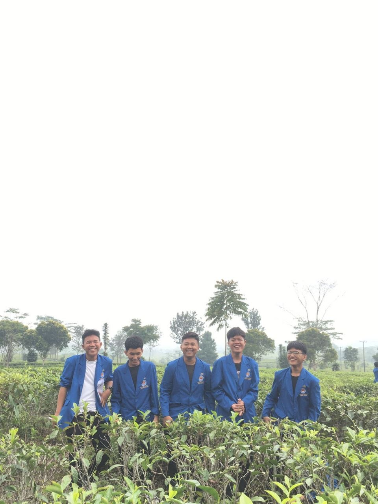
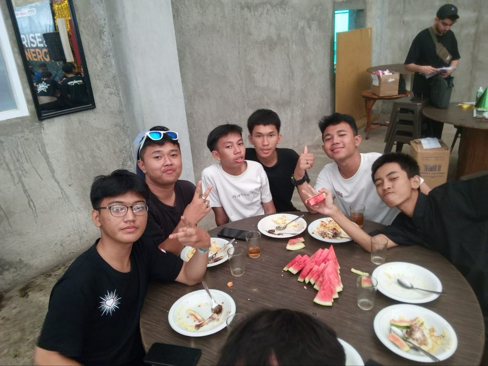

Pada saat saya kelas 11, sekolah kami mengadakan Kunjungan Industri ke kebun teh terbesar di Jawa Barat. Kami berangkat pagi itu, satu bus penuh dengan wajah-wajah penuh harap dan sedikit kecemasan. Bersama teman-teman seangkatan, Begitu turun dari bus, kami disambut oleh Bapak Haryo, manajer perkebunan, yang ramah dengan senyum hangatnya. Beliau kemudian memandu kami menuju aula pertemuan yang asri. Sambil menikmati secangkir teh hangat yang disajikan, Bapak Haryo mulai bercerita tentang sejarah perkebunan Pagi Cerah yang sudah berdiri sejak zaman Belanda. Beliau menjelaskan bagaimana proses penanaman, perawatan, hingga pemetikan daun teh dilakukan dengan penuh ketelitian. Setelah sesi pemaparan, kami dibagi menjadi beberapa kelompok untuk tur langsung ke lapangan. Aku masuk ke kelompok yang dipandu oleh Ibu Sari, seorang mandor pemetik teh yang sudah berpengalaman puluhan tahun. Kami berjalan menyusuri pematang kebun yang berkelok-kelok. Ibu Sari menunjukkan cara memetik daun teh yang benar, yaitu hanya memetik pucuk dan dua daun di bawahnya. Tangannya bergerak lincah dan cepat, mengumpulkan daun-daun teh ke dalam keranjang anyaman yang disandangnya. Selanjutnya, kami diajak mengunjungi pabrik pengolahan teh. Di sana, kami melihat langsung bagaimana daun teh segar diangkut, dilayukan, digulung, difermentasi, hingga dikeringkan. Aroma khas teh yang harum memenuhi seluruh ruangan. Kami juga berkesempatan mencicipi berbagai jenis teh hasil olahan Pagi Cerah, mulai dari teh hitam, teh hijau, hingga oolong tea. Rasanya sungguh berbeda dan jauh lebih kaya dibandingkan teh yang biasa kami minum di rumah. Menjelang sore, kami kembali berkumpul di aula. Sebelum berpamitan, kami berterima kasih kepada seluruh tim perkebunan Pagi Cerah atas ilmu dan pengalaman berharga yang telah diberikan. Perjalanan pulang terasa berbeda. Hamparan hijau kebun teh yang tadi hanya kami pandangi kini memiliki cerita dan makna tersendiri. Saya jadi lebih menghargai setiap cangkir teh yang tersaji, karena di baliknya ada kerja keras dan dedikasi para petani teh. Kunjungan industri kali ini benar-benar membuka mata dan memberikan pelajaran yang tak ternilai.


